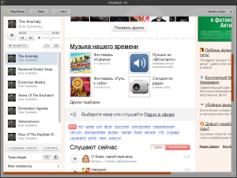

Написал свой нескучный кроссплатформенный музыкальный плеер - whyMusic.
Плеер — всего лишь обёртка над webview, в котором открыт сайт музыкального сервиса. Написан на Qt 4. Но можно снаружи (читай: глобальными хоткеями/командами) дёргать за кнопки “play”, “назад”, “вперёд”.
Изначально задумывался как оболочка над Яндекс.Музыкой, но теперь он стал мультисервисным — сегодня я just for fun добавил поддержку Jamendo.
Как работает:
- запускаем приложение первый раз — оно запустится;
- авторизуемся в нужном сервисе (куки пока не хранятся, поэтому каждый раз надо будет авторизоваться);
- запускаем приложение второй и последующие разы, отправляя команды в аргументах командной строки, — они будут выполняться.
Пример:
$ ./ymusic &
[1] 27324
$ ./ymusic toggle
play
Текущий список команд: toggle (переключить паузу/воспроизведение), play, pause, back, next.
Как пользоваться:
- Собрать под свою платформу:
qmake && make. Для сборки нужен установленный Qt4 с соответствующими header’ами (на ubuntu это пакеты qt4-qmake, libqt4-dev, libqt4-webkit). - Запустить приложение, залогиниться (куки пока что не хранятся, поэтому каждый раз придётся логиниться заново).
- Назначить близкой вашему сердцу утилитой горячие клавиши на запуск приложения с аргументами “play”, “back”, “next”.
- Использовать горячие клавиши.
Проект тут: https://bitbucket.org/xapienz/whymusic
Форкайте, делитесь)
Скриншот вот:

{kind=link}
Бинарники для разных платформ будут потом, когда руки дойдут :)